Creative Composites Group
We rebuilt Creative Composites Group's website around the products and industries it serves: a 989-page sitemap distilled into seven clear sections, component wireframes, and a bold navy-and-orange design system for the FRP leader.
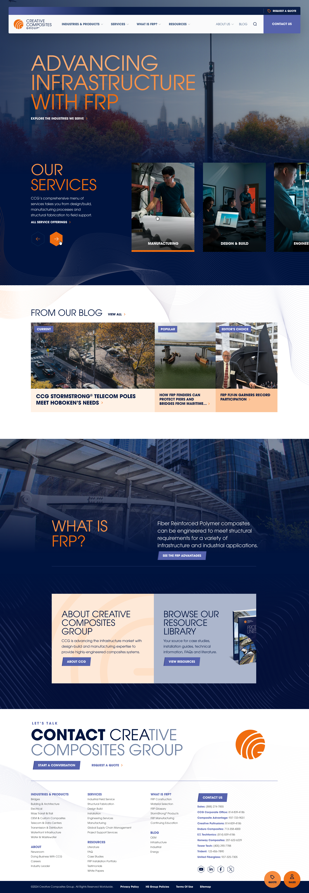
Overview
Turning a sprawling product catalogue into a site engineers can actually navigate.
Creative Composites Group designs and manufactures fiber-reinforced polymer (FRP) products for bridges, utilities, transit, waterfront and industrial infrastructure. Its legacy site had grown to nearly a thousand pages across product lines, services, resources and news — with no clear path for the engineers and specifiers who came looking for a specific solution.
Three businesses had grown into three websites: Creative Composites Group at 989 pages, Enduro Composites at 144 and United Fiberglass at 67, each with its own structure, and none built for the way an engineer actually looks for a solution, by industry first and then by product. The brief was to bring all of it onto a single HubSpot CMS, so the marketing team could publish from one place and, with HubSpot’s CRM behind it, drive and track conversion to sales in one automated flow instead of across fragmented systems.
We audited and mapped every page, distilled the combined estate into a seven-section architecture, then carried it through component wireframes and a navy-and-orange detail design system. The new creativecompositesgroup.com launched with more than 900 pages of products, services, FRP education and a resource library in one experience, a companion to the award-winning TowerTechUSA.com launched for the same marketing team in 2024.
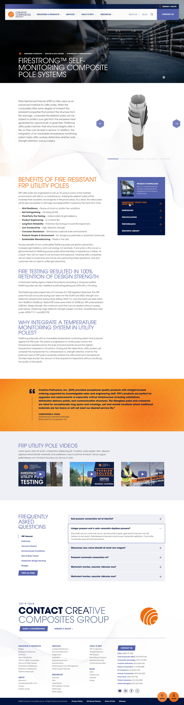
Our objectives
-
01.Bring three websites and some 1,200 pages into one architecture that follows how engineers search: by industry first, then product.
-
02.Give every product a detail page built to sell the specification: downloads, dimensions, performance data, FAQs and video in one place.
-
03.Explain FRP to newcomers without slowing down the experts who already know what they need.
-
04.Translate the CCG brand into a confident navy-and-orange system that works from hero video to data table.
-
05.Make “request a quote” and “find a sales partner” one tap away on every page, with HubSpot capturing and tracking every lead.
Advancing Infrastructure, Online
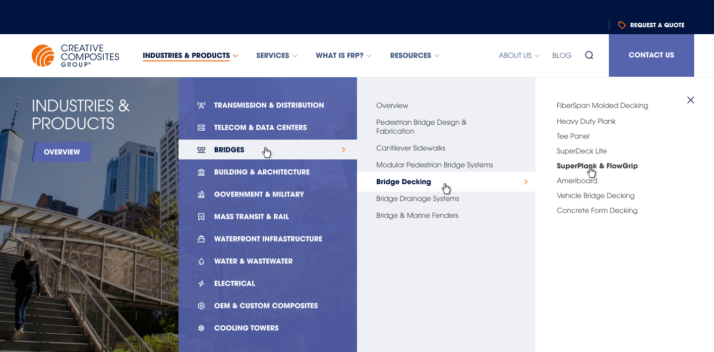
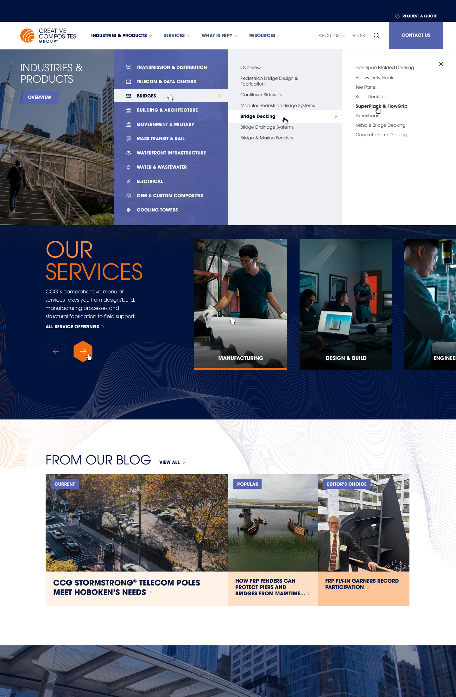
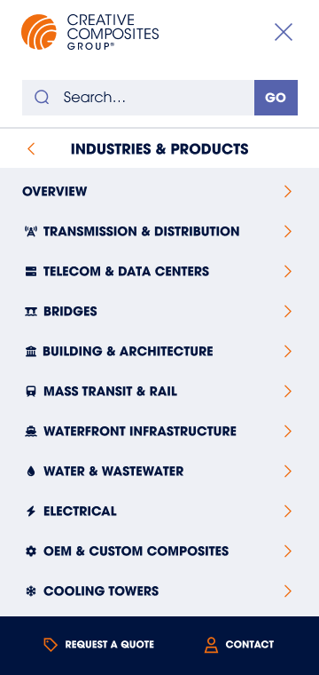
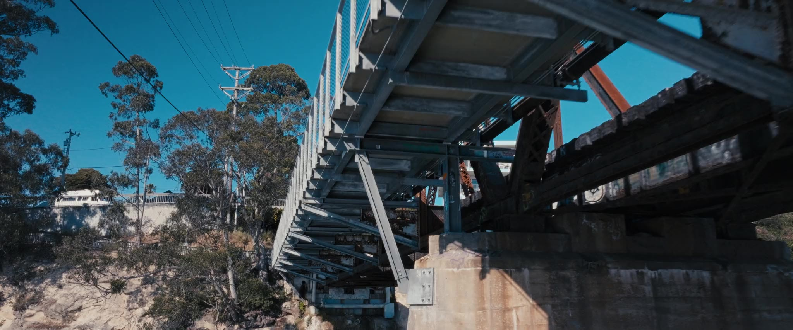
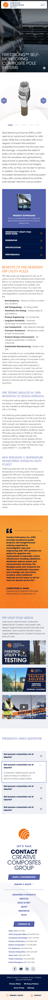
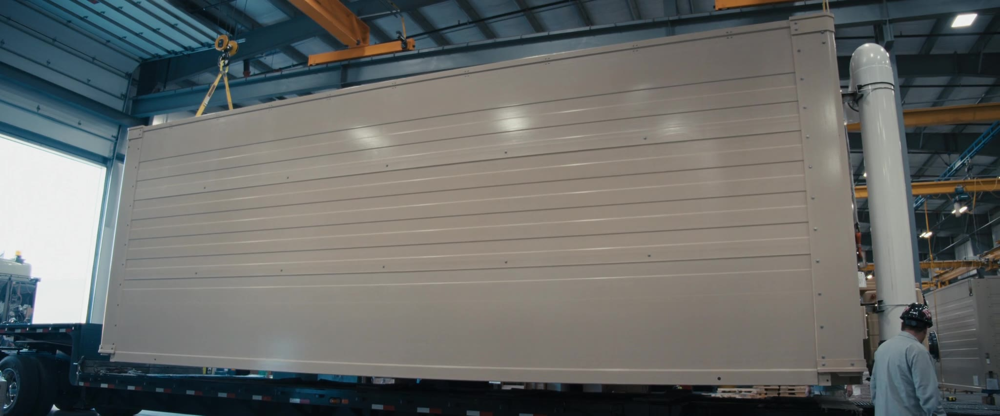
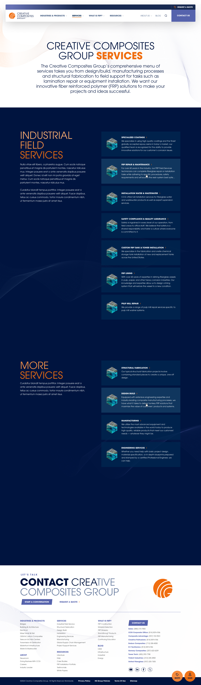
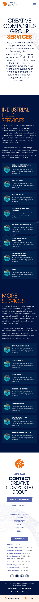
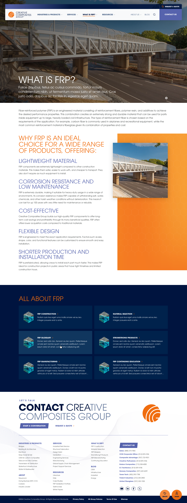
A home page built on FRP
A cinematic infrastructure loop, a services carousel, the latest from the blog and a plain-language “What is FRP?”, all leading into industries and products.
Industries and products, mapped
A four-level mega-menu that walks from industry to product line to product without ever leaving the header, and a mobile drawer that does the same.
Product pages that sell the spec
Every product carries its downloads, dimensions, performance data, testimonials, videos and FAQs on one page, built for the engineer writing the spec.
Services, from design to field
Design-build, manufacturing, fabrication and field services presented as one continuous offering, each with its own detail page and header film.
What is FRP? Answered.
A learning hub covering construction, material selection, manufacturing processes and a glossary, which brings newcomers up to speed without slowing down the experts.
Built with AI, owned by humans
An AI-assisted audit of a thousand pages, and a human-led design of the ones that matter
AI did the heavy lifting on the audit. It crawled the three legacy sites, clustered close to 1,200 pages by topic and product line, and drafted a first content model for the team to test against how engineers actually search. Later it generated layout variations for the component kit and checked screens against the design system before anything went to review.
The guardrails were simple. Every deliverable was reviewed and owned by the design team, and nothing went to the client without a person deciding it was right. AI shortened the distance between a decision and the artefact that captured it. It did not make the decisions.
One system, every page
From a 989-page sitemap to a component-driven design
The sitemap went through five major revisions, consolidating three legacy sites into seven sections, Industries & Products, Services, What is FRP, Resources, About, Blog and Contact, with Request a Quote and Find a Sales Partner as persistent utilities. Version 5.0, dated 19 March 2025, mapped all 989 pages of the main site.
Wireframes locked the page structure and component kit before visual design. The detail design then carried the same modules across desktop and mobile: 45 desktop templates plus their mobile variants, navigation states and forms.
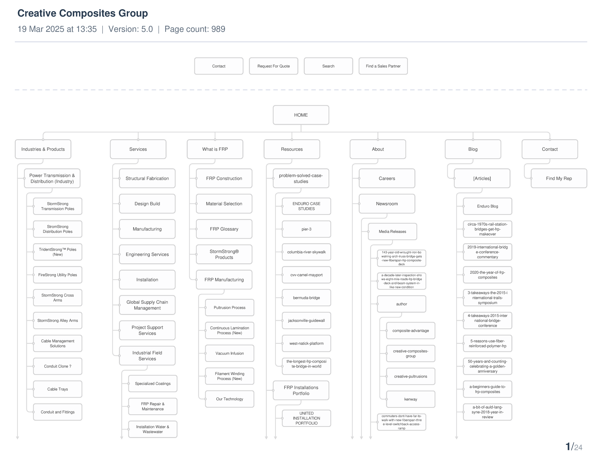
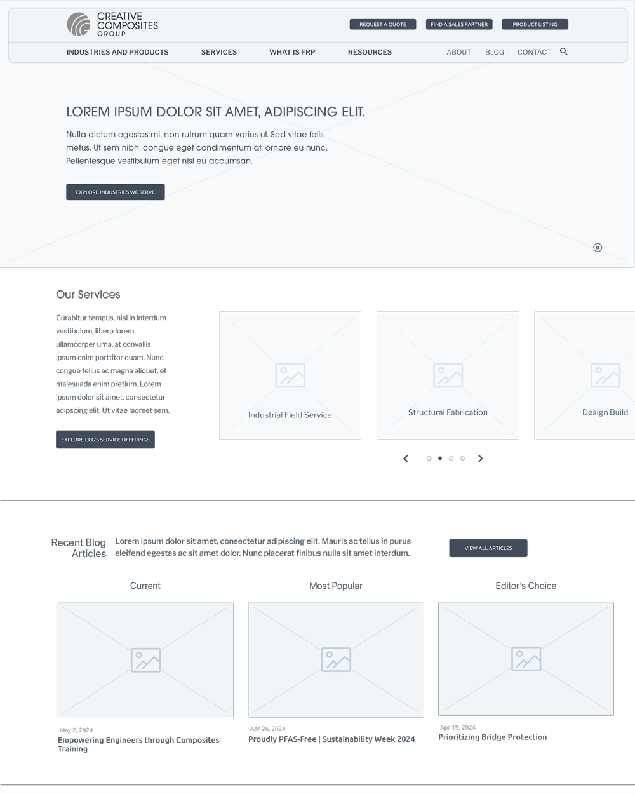
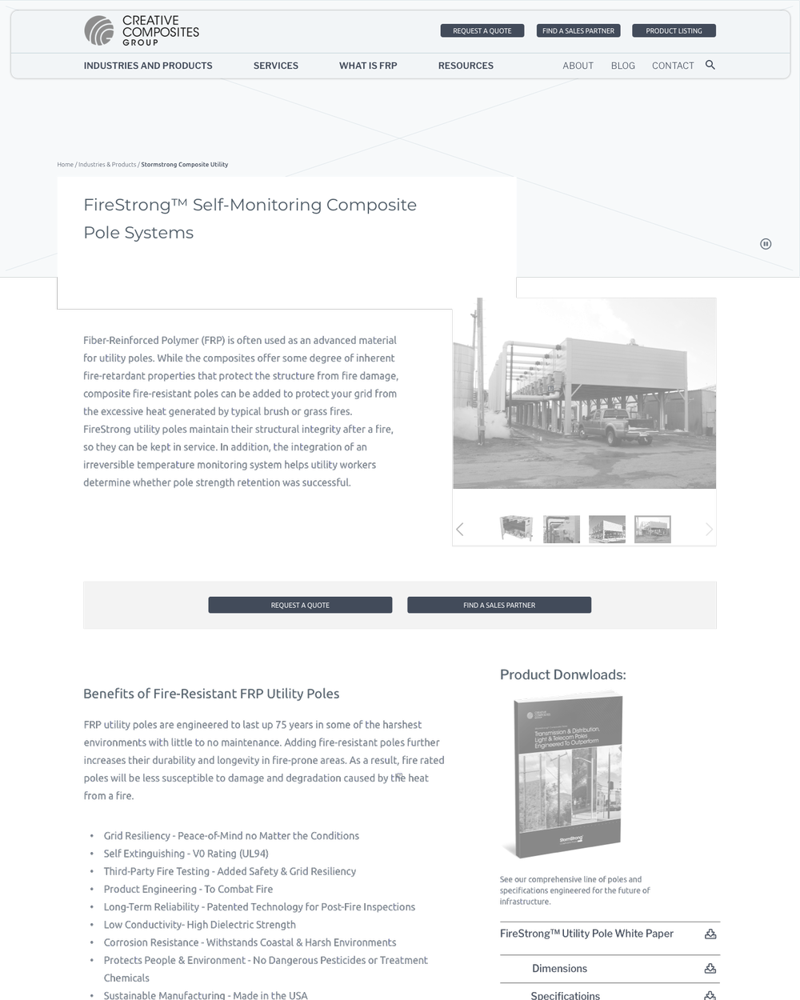
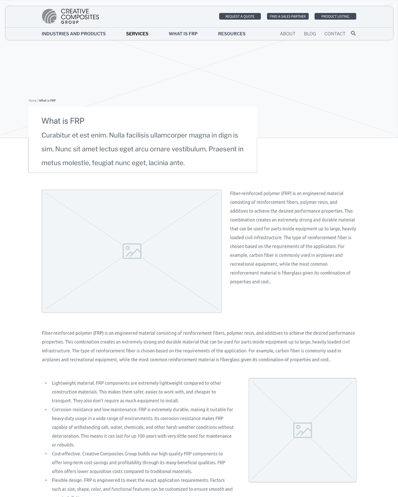
The impact
A site that finally matches the engineering behind it
The new creativecompositesgroup.com launched in February 2025 with more than 900 pages on one HubSpot CMS. In the eighteen months that followed, March 2025 to August 2026, it recorded 1.2 million page views from 708,000 users, roughly three times the traffic of the previous eighteen months, and turned that attention into action: 35,672 clicks to request a quote, 65,864 clicks through to sales and 21,745 phone calls started from the site. Organic search alone brought 106,000 sessions. Because HubSpot’s CMS and CRM sit together, the marketing team can see every one of those leads through to sale, and publish across the whole estate from a single place.
Page views since launch
March 2025 to August 2026, up 194% on the previous eighteen months across the three legacy sites.
Users in eighteen months
Up 362% on the period before, three quarters of them on desktop, where engineers do their specifying.
Request-a-quote clicks
Plus 65,864 clicks through to sales and 21,745 phone calls started from the site, all tracked in HubSpot.